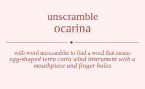

The word found after unscrambling ocarina means that egg-shaped terra cotta wind instrument with a mouthpiece and finger holes, .

The word found after unscrambling ocarina means that egg-shaped terra cotta wind instrument with a mouthpiece and finger holes, .
You can also find solutions for different combinations of letters in ocarina like ocarina ocarian ocarnia ocarnai ocarain ocarani ocairna ocairan ocainra ocainar ocaiarn ocaianr ocanria ocanrai ocanira ocaniar ocanari ocanair ocaarin ocaarni ocaairn ocaainr ocaanri ocaanir ocraina ocraian ocrania ocranai ocraain ocraani ocriana ocriaan ocrinaa ocrinaa ocriaan ocriana ocrnaia ocrnaai ocrniaa ocrniaa ocrnaai ocrnaia ocraain ocraani ocraian ocraina ocranai ocrania ociarna ociaran ocianra ocianar ociaarn ociaanr ocirana ociraan ocirnaa ocirnaa ociraan ocirana ocinara ocinaar ocinraa ocinraa ocinaar ocinara ociaarn ociaanr ociaran ociarna ocianar ocianra ocnaria ocnarai ocnaira ocnaiar ocnaari ocnaair ocnraia ocnraai ocnriaa ocnriaa ocnraai ocnraia ocniara ocniaar ocniraa ocniraa ocniaar ocniara ocnaari ocnaair ocnarai ocnaria ocnaiar ocnaira ocaarin ocaarni ocaairn ocaainr ocaanri ocaanir ocarain ocarani ocarian ocarina ocarnai ocarnia ocaiarn ocaianr ocairan ocairna ocainar ocainra ocanari ocanair ocanrai ocanria ocaniar ocanira oacrina oacrian oacrnia oacrnai oacrain oacrani oacirna oaciran oacinra oacinar oaciarn oacianr oacnria oacnrai oacnira oacniar oacnari oacnair oacarin oacarni oacairn oacainr oacanri oacanir oarcina oarcian oarcnia oarcnai oarcain oarcani oaricna oarican oarinca oarinac oariacn oarianc oarncia oarncai oarnica oarniac oarnaci oarnaic oaracin oaracni oaraicn oarainc oaranci oaranic oaicrna oaicran oaicnra oaicnar oaicarn oaicanr oaircna oaircan oairnca oairnac oairacn oairanc oaincra oaincar oainrca oainrac oainacr oainarc oaiacrn oaiacnr oaiarcn oaiarnc oaiancr oaianrc oancria oancrai oancira oanciar oancari oancair oanrcia oanrcai oanrica oanriac oanraci oanraic oanicra oanicar oanirca oanirac oaniacr oaniarc oanacri oanacir oanarci oanaric oanaicr oanairc oaacrin oaacrni oaacirn oaacinr oaacnri oaacnir oaarcin oaarcni oaaricn oaarinc oaarnci oaarnic oaaicrn oaaicnr oaaircn oaairnc oaaincr oaainrc oaancri oaancir oaanrci oaanric oaanicr oaanirc orcaina orcaian orcania orcanai orcaain orcaani orciana orciaan orcinaa orcinaa orciaan orciana orcnaia orcnaai orcniaa orcniaa orcnaai orcnaia orcaain orcaani orcaian orcaina orcanai orcania oracina oracian oracnia oracnai oracain oracani oraicna oraican orainca orainac oraiacn oraianc orancia orancai oranica oraniac oranaci oranaic oraacin oraacni oraaicn oraainc oraanci oraanic oricana oricaan oricnaa oricnaa oricaan oricana oriacna oriacan orianca orianac oriaacn oriaanc orincaa orincaa orinaca orinaac orinaca orinaac oriacan oriacna oriaacn oriaanc orianca orianac orncaia orncaai ornciaa ornciaa orncaai orncaia ornacia ornacai ornaica ornaiac ornaaci ornaaic ornicaa ornicaa orniaca orniaac orniaca orniaac ornacai ornacia ornaaci ornaaic ornaica ornaiac oracain oracani oracian oracina oracnai oracnia oraacin oraacni oraaicn oraainc oraanci oraanic oraican oraicna oraiacn oraianc orainca orainac orancai orancia oranaci oranaic oranica oraniac oicarna oicaran oicanra oicanar oicaarn oicaanr oicrana oicraan oicrnaa oicrnaa oicraan oicrana oicnara oicnaar oicnraa oicnraa oicnaar oicnara oicaarn oicaanr oicaran oicarna oicanar oicanra oiacrna oiacran oiacnra oiacnar oiacarn oiacanr oiarcna oiarcan oiarnca oiarnac oiaracn oiaranc oiancra oiancar oianrca oianrac oianacr oianarc oiaacrn oiaacnr oiaarcn oiaarnc oiaancr oiaanrc oircana oircaan oircnaa oircnaa oircaan oircana oiracna oiracan oiranca oiranac oiraacn oiraanc oirncaa oirncaa oirnaca oirnaac oirnaca oirnaac oiracan oiracna oiraacn oiraanc oiranca oiranac oincara oincaar oincraa oincraa oincaar oincara oinacra oinacar oinarca oinarac oinaacr oinaarc oinrcaa oinrcaa oinraca oinraac oinraca oinraac oinacar oinacra oinaacr oinaarc oinarca oinarac oiacarn oiacanr oiacran oiacrna oiacnar oiacnra oiaacrn oiaacnr oiaarcn oiaarnc oiaancr oiaanrc oiarcan oiarcna oiaracn oiaranc oiarnca oiarnac oiancar oiancra oianacr oianarc oianrca oianrac oncaria oncarai oncaira oncaiar oncaari oncaair oncraia oncraai oncriaa oncriaa oncraai oncraia onciara onciaar onciraa onciraa onciaar onciara oncaari oncaair oncarai oncaria oncaiar oncaira onacria onacrai onacira onaciar onacari onacair onarcia onarcai onarica onariac onaraci onaraic onaicra onaicar onairca onairac onaiacr onaiarc onaacri onaacir onaarci onaaric onaaicr onaairc onrcaia onrcaai onrciaa onrciaa onrcaai onrcaia onracia onracai onraica onraiac onraaci onraaic onricaa onricaa onriaca onriaac onriaca onriaac onracai onracia onraaci onraaic onraica onraiac onicara onicaar onicraa onicraa onicaar onicara oniacra oniacar oniarca oniarac oniaacr oniaarc onircaa onircaa oniraca oniraac oniraca oniraac oniacar oniacra oniaacr oniaarc oniarca oniarac onacari onacair onacrai onacria onaciar onacira onaacri onaacir onaarci onaaric onaaicr onaairc onarcai onarcia onaraci onaraic onarica onariac onaicar onaicra onaiacr onaiarc onairca onairac oacarin oacarni oacairn oacainr oacanri oacanir oacrain oacrani oacrian oacrina oacrnai oacrnia oaciarn oacianr oaciran oacirna oacinar oacinra oacnari oacnair oacnrai oacnria oacniar oacnira oaacrin oaacrni oaacirn oaacinr oaacnri oaacnir oaarcin oaarcni oaaricn oaarinc oaarnci oaarnic oaaicrn oaaicnr oaaircn oaairnc oaaincr oaainrc oaancri oaancir oaanrci oaanric oaanicr oaanirc oarcain oarcani oarcian oarcina oarcnai oarcnia oaracin oaracni oaraicn oarainc oaranci oaranic oarican oaricna oariacn oarianc oarinca oarinac oarncai oarncia oarnaci oarnaic oarnica oarniac oaicarn oaicanr oaicran oaicrna oaicnar oaicnra oaiacrn oaiacnr oaiarcn oaiarnc oaiancr oaianrc oaircan oaircna oairacn oairanc oairnca oairnac oaincar oaincra oainacr oainarc oainrca oainrac oancari oancair oancrai oancria oanciar oancira oanacri oanacir oanarci oanaric oanaicr oanairc oanrcai oanrcia oanraci oanraic oanrica oanriac oanicar oanicra oaniacr oaniarc oanirca oanirac coarina coarian coarnia coarnai coarain coarani coairna coairan coainra coainar coaiarn coaianr coanria coanrai coanira coaniar coanari coanair coaarin coaarni coaairn coaainr coaanri coaanir coraina coraian corania coranai coraain coraani coriana coriaan corinaa corinaa coriaan coriana cornaia cornaai corniaa corniaa cornaai cornaia coraain coraani coraian coraina coranai corania coiarna coiaran coianra coianar coiaarn coiaanr coirana coiraan coirnaa coirnaa coiraan coirana coinara coinaar coinraa coinraa coinaar coinara coiaarn coiaanr coiaran coiarna coianar coianra conaria conarai conaira conaiar conaari conaair conraia conraai conriaa conriaa conraai conraia coniara coniaar coniraa coniraa coniaar coniara conaari conaair conarai conaria conaiar conaira coaarin coaarni coaairn coaainr coaanri coaanir coarain coarani coarian coarina coarnai coarnia coaiarn coaianr coairan coairna coainar coainra coanari coanair coanrai coanria coaniar coanira caorina caorian caornia caornai caorain caorani caoirna caoiran caoinra caoinar caoiarn caoianr caonria caonrai caonira caoniar caonari caonair caoarin caoarni caoairn caoainr caoanri caoanir caroina caroian caronia caronai caroain caroani cariona carioan carinoa carinao cariaon cariano carnoia carnoai carnioa carniao carnaoi carnaio caraoin caraoni caraion caraino caranoi caranio caiorna caioran caionra caionar caioarn caioanr cairona cairoan cairnoa cairnao cairaon cairano cainora cainoar cainroa cainrao cainaor cainaro caiaorn caiaonr caiaron caiarno caianor caianro canoria canorai canoira canoiar canoari canoair canroia canroai canrioa canriao canraoi canraio caniora canioar caniroa canirao caniaor caniaro canaori canaoir canaroi canario canaior canairo caaorin caaorni caaoirn caaoinr caaonri caaonir caaroin caaroni caarion caarino caarnoi caarnio caaiorn caaionr caairon caairno caainor caainro caanori caanoir caanroi caanrio caanior caaniro croaina croaian croania croanai croaain croaani croiana croiaan croinaa croinaa croiaan croiana cronaia cronaai croniaa croniaa cronaai cronaia croaain croaani croaian croaina croanai croania craoina craoian craonia craonai craoain craoani craiona craioan crainoa crainao craiaon craiano cranoia cranoai cranioa craniao cranaoi cranaio craaoin craaoni craaion craaino craanoi craanio crioana crioaan crionaa crionaa crioaan crioana criaona criaoan crianoa crianao criaaon criaano crinoaa crinoaa crinaoa crinaao crinaoa crinaao criaoan criaona criaaon criaano crianoa crianao crnoaia crnoaai crnoiaa crnoiaa crnoaai crnoaia crnaoia crnaoai crnaioa crnaiao crnaaoi crnaaio crnioaa crnioaa crniaoa crniaao crniaoa crniaao crnaoai crnaoia crnaaoi crnaaio crnaioa crnaiao craoain craoani craoian craoina craonai craonia craaoin craaoni craaion craaino craanoi craanio craioan craiona craiaon craiano crainoa crainao cranoai cranoia cranaoi cranaio cranioa craniao cioarna cioaran cioanra cioanar cioaarn cioaanr ciorana cioraan ciornaa ciornaa cioraan ciorana cionara cionaar cionraa cionraa cionaar cionara cioaarn cioaanr cioaran cioarna cioanar cioanra ciaorna ciaoran ciaonra ciaonar ciaoarn ciaoanr ciarona ciaroan ciarnoa ciarnao ciaraon ciarano cianora cianoar cianroa cianrao cianaor cianaro ciaaorn ciaaonr ciaaron ciaarno ciaanor ciaanro ciroana ciroaan cironaa cironaa ciroaan ciroana ciraona ciraoan ciranoa ciranao ciraaon ciraano cirnoaa cirnoaa cirnaoa cirnaao cirnaoa cirnaao ciraoan ciraona ciraaon ciraano ciranoa ciranao cinoara cinoaar cinoraa cinoraa cinoaar cinoara cinaora cinaoar cinaroa cinarao cinaaor cinaaro cinroaa cinroaa cinraoa cinraao cinraoa cinraao cinaoar cinaora cinaaor cinaaro cinaroa cinarao ciaoarn ciaoanr ciaoran ciaorna ciaonar ciaonra ciaaorn ciaaonr ciaaron ciaarno ciaanor ciaanro ciaroan ciarona ciaraon ciarano ciarnoa ciarnao cianoar cianora cianaor cianaro cianroa cianrao cnoaria cnoarai cnoaira cnoaiar cnoaari cnoaair cnoraia cnoraai cnoriaa cnoriaa cnoraai cnoraia cnoiara cnoiaar cnoiraa cnoiraa cnoiaar cnoiara cnoaari cnoaair cnoarai cnoaria cnoaiar cnoaira cnaoria cnaorai cnaoira cnaoiar cnaoari cnaoair cnaroia cnaroai cnarioa cnariao cnaraoi cnaraio cnaiora cnaioar cnairoa cnairao cnaiaor cnaiaro cnaaori cnaaoir cnaaroi cnaario cnaaior cnaairo cnroaia cnroaai cnroiaa cnroiaa cnroaai cnroaia cnraoia cnraoai cnraioa cnraiao cnraaoi cnraaio cnrioaa cnrioaa cnriaoa cnriaao cnriaoa cnriaao cnraoai cnraoia cnraaoi cnraaio cnraioa cnraiao cnioara cnioaar cnioraa cnioraa cnioaar cnioara cniaora cniaoar cniaroa cniarao cniaaor cniaaro cniroaa cniroaa cniraoa cniraao cniraoa cniraao cniaoar cniaora cniaaor cniaaro cniaroa cniarao cnaoari cnaoair cnaorai cnaoria cnaoiar cnaoira cnaaori cnaaoir cnaaroi cnaario cnaaior cnaairo cnaroai cnaroia cnaraoi cnaraio cnarioa cnariao cnaioar cnaiora cnaiaor cnaiaro cnairoa cnairao caoarin caoarni caoairn caoainr caoanri caoanir caorain caorani caorian caorina caornai caornia caoiarn caoianr caoiran caoirna caoinar caoinra caonari caonair caonrai caonria caoniar caonira caaorin caaorni caaoirn caaoinr caaonri caaonir caaroin caaroni caarion caarino caarnoi caarnio caaiorn caaionr caairon caairno caainor caainro caanori caanoir caanroi caanrio caanior caaniro caroain caroani caroian caroina caronai caronia caraoin caraoni caraion caraino caranoi caranio carioan cariona cariaon cariano carinoa carinao carnoai carnoia carnaoi carnaio carnioa carniao caioarn caioanr caioran caiorna caionar caionra caiaorn caiaonr caiaron caiarno caianor caianro cairoan cairona cairaon cairano cairnoa cairnao cainoar cainora cainaor cainaro cainroa cainrao canoari canoair canorai canoria canoiar canoira canaori canaoir canaroi canario canaior canairo canroai canroia canraoi canraio canrioa canriao canioar caniora caniaor caniaro caniroa canirao aocrina aocrian aocrnia aocrnai aocrain aocrani aocirna aociran aocinra aocinar aociarn aocianr aocnria aocnrai aocnira aocniar aocnari aocnair aocarin aocarni aocairn aocainr aocanri aocanir aorcina aorcian aorcnia aorcnai aorcain aorcani aoricna aorican aorinca aorinac aoriacn aorianc aorncia aorncai aornica aorniac aornaci aornaic aoracin aoracni aoraicn aorainc aoranci aoranic aoicrna aoicran aoicnra aoicnar aoicarn aoicanr aoircna aoircan aoirnca aoirnac aoiracn aoiranc aoincra aoincar aoinrca aoinrac aoinacr aoinarc aoiacrn aoiacnr aoiarcn aoiarnc aoiancr aoianrc aoncria aoncrai aoncira aonciar aoncari aoncair aonrcia aonrcai aonrica aonriac aonraci aonraic aonicra aonicar aonirca aonirac aoniacr aoniarc aonacri aonacir aonarci aonaric aonaicr aonairc aoacrin aoacrni aoacirn aoacinr aoacnri aoacnir aoarcin aoarcni aoaricn aoarinc aoarnci aoarnic aoaicrn aoaicnr aoaircn aoairnc aoaincr aoainrc aoancri aoancir aoanrci aoanric aoanicr aoanirc acorina acorian acornia acornai acorain acorani acoirna acoiran acoinra acoinar acoiarn acoianr aconria aconrai aconira aconiar aconari aconair acoarin acoarni acoairn acoainr acoanri acoanir acroina acroian acronia acronai acroain acroani acriona acrioan acrinoa acrinao acriaon acriano acrnoia acrnoai acrnioa acrniao acrnaoi acrnaio acraoin acraoni acraion acraino acranoi acranio aciorna acioran acionra acionar acioarn acioanr acirona aciroan acirnoa acirnao aciraon acirano acinora acinoar acinroa acinrao acinaor acinaro aciaorn aciaonr aciaron aciarno acianor acianro acnoria acnorai acnoira acnoiar acnoari acnoair acnroia acnroai acnrioa acnriao acnraoi acnraio acniora acnioar acniroa acnirao acniaor acniaro acnaori acnaoir acnaroi acnario acnaior acnairo acaorin acaorni acaoirn acaoinr acaonri acaonir acaroin acaroni acarion acarino acarnoi acarnio acaiorn acaionr acairon acairno acainor acainro acanori acanoir acanroi acanrio acanior acaniro arocina arocian arocnia arocnai arocain arocani aroicna aroican aroinca aroinac aroiacn aroianc aroncia aroncai aronica aroniac aronaci aronaic aroacin aroacni aroaicn aroainc aroanci aroanic arcoina arcoian arconia arconai arcoain arcoani arciona arcioan arcinoa arcinao arciaon arciano arcnoia arcnoai arcnioa arcniao arcnaoi arcnaio arcaoin arcaoni arcaion arcaino arcanoi arcanio ariocna ariocan arionca arionac arioacn arioanc aricona aricoan aricnoa aricnao aricaon aricano arinoca arinoac arincoa arincao arinaoc arinaco ariaocn ariaonc ariacon ariacno arianoc arianco arnocia arnocai arnoica arnoiac arnoaci arnoaic arncoia arncoai arncioa arnciao arncaoi arncaio arnioca arnioac arnicoa arnicao arniaoc arniaco arnaoci arnaoic arnacoi arnacio arnaioc arnaico araocin araocni araoicn araoinc araonci araonic aracoin araconi aracion aracino aracnoi aracnio araiocn araionc araicon araicno arainoc arainco aranoci aranoic arancoi arancio aranioc aranico aiocrna aiocran aiocnra aiocnar aiocarn aiocanr aiorcna aiorcan aiornca aiornac aioracn aioranc aioncra aioncar aionrca aionrac aionacr aionarc aioacrn aioacnr aioarcn aioarnc aioancr aioanrc aicorna aicoran aiconra aiconar aicoarn aicoanr aicrona aicroan aicrnoa aicrnao aicraon aicrano aicnora aicnoar aicnroa aicnrao aicnaor aicnaro aicaorn aicaonr aicaron aicarno aicanor aicanro airocna airocan aironca aironac airoacn airoanc aircona aircoan aircnoa aircnao aircaon aircano airnoca airnoac airncoa airncao airnaoc airnaco airaocn airaonc airacon airacno airanoc airanco ainocra ainocar ainorca ainorac ainoacr ainoarc aincora aincoar aincroa aincrao aincaor aincaro ainroca ainroac ainrcoa ainrcao ainraoc ainraco ainaocr ainaorc ainacor ainacro ainaroc ainarco aiaocrn aiaocnr aiaorcn aiaornc aiaoncr aiaonrc aiacorn aiaconr aiacron aiacrno aiacnor aiacnro aiarocn aiaronc aiarcon aiarcno aiarnoc aiarnco aianocr aianorc aiancor aiancro aianroc aianrco anocria anocrai anocira anociar anocari anocair anorcia anorcai anorica anoriac anoraci anoraic anoicra anoicar anoirca anoirac anoiacr anoiarc anoacri anoacir anoarci anoaric anoaicr anoairc ancoria ancorai ancoira ancoiar ancoari ancoair ancroia ancroai ancrioa ancriao ancraoi ancraio anciora ancioar anciroa ancirao anciaor anciaro ancaori ancaoir ancaroi ancario ancaior ancairo anrocia anrocai anroica anroiac anroaci anroaic anrcoia anrcoai anrcioa anrciao anrcaoi anrcaio anrioca anrioac anricoa anricao anriaoc anriaco anraoci anraoic anracoi anracio anraioc anraico aniocra aniocar aniorca aniorac anioacr anioarc anicora anicoar anicroa anicrao anicaor anicaro aniroca aniroac anircoa anircao aniraoc aniraco aniaocr aniaorc aniacor aniacro aniaroc aniarco anaocri anaocir anaorci anaoric anaoicr anaoirc anacori anacoir anacroi anacrio anacior anaciro anaroci anaroic anarcoi anarcio anarioc anarico anaiocr anaiorc anaicor anaicro anairoc anairco aaocrin aaocrni aaocirn aaocinr aaocnri aaocnir aaorcin aaorcni aaoricn aaorinc aaornci aaornic aaoicrn aaoicnr aaoircn aaoirnc aaoincr aaoinrc aaoncri aaoncir aaonrci aaonric aaonicr aaonirc aacorin aacorni aacoirn aacoinr aaconri aaconir aacroin aacroni aacrion aacrino aacrnoi aacrnio aaciorn aacionr aaciron aacirno aacinor aacinro aacnori aacnoir aacnroi aacnrio aacnior aacniro aarocin aarocni aaroicn aaroinc aaronci aaronic aarcoin aarconi aarcion aarcino aarcnoi aarcnio aariocn aarionc aaricon aaricno aarinoc aarinco aarnoci aarnoic aarncoi aarncio aarnioc aarnico aaiocrn aaiocnr aaiorcn aaiornc aaioncr aaionrc aaicorn aaiconr aaicron aaicrno aaicnor aaicnro aairocn aaironc aaircon aaircno aairnoc aairnco aainocr aainorc aaincor aaincro aainroc aainrco aanocri aanocir aanorci aanoric aanoicr aanoirc aancori aancoir aancroi aancrio aancior aanciro aanroci aanroic aanrcoi aanrcio aanrioc aanrico aaniocr aaniorc aanicor aanicro aaniroc aanirco rocaina rocaian rocania rocanai rocaain rocaani rociana rociaan rocinaa rocinaa rociaan rociana rocnaia rocnaai rocniaa rocniaa rocnaai rocnaia rocaain rocaani rocaian rocaina rocanai rocania roacina roacian roacnia roacnai roacain roacani roaicna roaican roainca roainac roaiacn roaianc roancia roancai roanica roaniac roanaci roanaic roaacin roaacni roaaicn roaainc roaanci roaanic roicana roicaan roicnaa roicnaa roicaan roicana roiacna roiacan roianca roianac roiaacn roiaanc roincaa roincaa roinaca roinaac roinaca roinaac roiacan roiacna roiaacn roiaanc roianca roianac roncaia roncaai ronciaa ronciaa roncaai roncaia ronacia ronacai ronaica ronaiac ronaaci ronaaic ronicaa ronicaa roniaca roniaac roniaca roniaac ronacai ronacia ronaaci ronaaic ronaica ronaiac roacain roacani roacian roacina roacnai roacnia roaacin roaacni roaaicn roaainc roaanci roaanic roaican roaicna roaiacn roaianc roainca roainac roancai roancia roanaci roanaic roanica roaniac rcoaina rcoaian rcoania rcoanai rcoaain rcoaani rcoiana rcoiaan rcoinaa rcoinaa rcoiaan rcoiana rconaia rconaai rconiaa rconiaa rconaai rconaia rcoaain rcoaani rcoaian rcoaina rcoanai rcoania rcaoina rcaoian rcaonia rcaonai rcaoain rcaoani rcaiona rcaioan rcainoa rcainao rcaiaon rcaiano rcanoia rcanoai rcanioa rcaniao rcanaoi rcanaio rcaaoin rcaaoni rcaaion rcaaino rcaanoi rcaanio rcioana rcioaan rcionaa rcionaa rcioaan rcioana rciaona rciaoan rcianoa rcianao rciaaon rciaano rcinoaa rcinoaa rcinaoa rcinaao rcinaoa rcinaao rciaoan rciaona rciaaon rciaano rcianoa rcianao rcnoaia rcnoaai rcnoiaa rcnoiaa rcnoaai rcnoaia rcnaoia rcnaoai rcnaioa rcnaiao rcnaaoi rcnaaio rcnioaa rcnioaa rcniaoa rcniaao rcniaoa rcniaao rcnaoai rcnaoia rcnaaoi rcnaaio rcnaioa rcnaiao rcaoain rcaoani rcaoian rcaoina rcaonai rcaonia rcaaoin rcaaoni rcaaion rcaaino rcaanoi rcaanio rcaioan rcaiona rcaiaon rcaiano rcainoa rcainao rcanoai rcanoia rcanaoi rcanaio rcanioa rcaniao raocina raocian raocnia raocnai raocain raocani raoicna raoican raoinca raoinac raoiacn raoianc raoncia raoncai raonica raoniac raonaci raonaic raoacin raoacni raoaicn raoainc raoanci raoanic racoina racoian raconia raconai racoain racoani raciona racioan racinoa racinao raciaon raciano racnoia racnoai racnioa racniao racnaoi racnaio racaoin racaoni racaion racaino racanoi racanio raiocna raiocan raionca raionac raioacn raioanc raicona raicoan raicnoa raicnao raicaon raicano rainoca rainoac raincoa raincao rainaoc rainaco raiaocn raiaonc raiacon raiacno raianoc raianco ranocia ranocai ranoica ranoiac ranoaci ranoaic rancoia rancoai rancioa ranciao rancaoi rancaio ranioca ranioac ranicoa ranicao raniaoc raniaco ranaoci ranaoic ranacoi ranacio ranaioc ranaico raaocin raaocni raaoicn raaoinc raaonci raaonic raacoin raaconi raacion raacino raacnoi raacnio raaiocn raaionc raaicon raaicno raainoc raainco raanoci raanoic raancoi raancio raanioc raanico riocana riocaan riocnaa riocnaa riocaan riocana rioacna rioacan rioanca rioanac rioaacn rioaanc rioncaa rioncaa rionaca rionaac rionaca rionaac rioacan rioacna rioaacn rioaanc rioanca rioanac ricoana ricoaan riconaa riconaa ricoaan ricoana ricaona ricaoan ricanoa ricanao ricaaon ricaano ricnoaa ricnoaa ricnaoa ricnaao ricnaoa ricnaao ricaoan ricaona ricaaon ricaano ricanoa ricanao riaocna riaocan riaonca riaonac riaoacn riaoanc riacona riacoan riacnoa riacnao riacaon riacano rianoca rianoac riancoa riancao rianaoc rianaco riaaocn riaaonc riaacon riaacno riaanoc riaanco rinocaa rinocaa rinoaca rinoaac rinoaca rinoaac rincoaa rincoaa rincaoa rincaao rincaoa rincaao rinaoca rinaoac rinacoa rinacao rinaaoc rinaaco rinaoca rinaoac rinacoa rinacao rinaaoc rinaaco riaocan riaocna riaoacn riaoanc riaonca riaonac riacoan riacona riacaon riacano riacnoa riacnao riaaocn riaaonc riaacon riaacno riaanoc riaanco rianoca rianoac riancoa riancao rianaoc rianaco rnocaia rnocaai rnociaa rnociaa rnocaai rnocaia rnoacia rnoacai rnoaica rnoaiac rnoaaci rnoaaic rnoicaa rnoicaa rnoiaca rnoiaac rnoiaca rnoiaac rnoacai rnoacia rnoaaci rnoaaic rnoaica rnoaiac rncoaia rncoaai rncoiaa rncoiaa rncoaai rncoaia rncaoia rncaoai rncaioa rncaiao rncaaoi rncaaio rncioaa rncioaa rnciaoa rnciaao rnciaoa rnciaao rncaoai rncaoia rncaaoi rncaaio rncaioa rncaiao rnaocia rnaocai rnaoica rnaoiac rnaoaci rnaoaic rnacoia rnacoai rnacioa rnaciao rnacaoi rnacaio rnaioca rnaioac rnaicoa rnaicao rnaiaoc rnaiaco rnaaoci rnaaoic rnaacoi rnaacio rnaaioc rnaaico rniocaa rniocaa rnioaca rnioaac rnioaca rnioaac rnicoaa rnicoaa rnicaoa rnicaao rnicaoa rnicaao rniaoca rniaoac rniacoa rniacao rniaaoc rniaaco rniaoca rniaoac rniacoa rniacao rniaaoc rniaaco rnaocai rnaocia rnaoaci rnaoaic rnaoica rnaoiac rnacoai rnacoia rnacaoi rnacaio rnacioa rnaciao rnaaoci rnaaoic rnaacoi rnaacio rnaaioc rnaaico rnaioca rnaioac rnaicoa rnaicao rnaiaoc rnaiaco raocain raocani raocian raocina raocnai raocnia raoacin raoacni raoaicn raoainc raoanci raoanic raoican raoicna raoiacn raoianc raoinca raoinac raoncai raoncia raonaci raonaic raonica raoniac racoain racoani racoian racoina raconai raconia racaoin racaoni racaion racaino racanoi racanio racioan raciona raciaon raciano racinoa racinao racnoai racnoia racnaoi racnaio racnioa racniao raaocin raaocni raaoicn raaoinc raaonci raaonic raacoin raaconi raacion raacino raacnoi raacnio raaiocn raaionc raaicon raaicno raainoc raainco raanoci raanoic raancoi raancio raanioc raanico raiocan raiocna raioacn raioanc raionca raionac raicoan raicona raicaon raicano raicnoa raicnao raiaocn raiaonc raiacon raiacno raianoc raianco rainoca rainoac raincoa raincao rainaoc rainaco ranocai ranocia ranoaci ranoaic ranoica ranoiac rancoai rancoia rancaoi rancaio rancioa ranciao ranaoci ranaoic ranacoi ranacio ranaioc ranaico ranioca ranioac ranicoa ranicao raniaoc raniaco iocarna iocaran iocanra iocanar iocaarn iocaanr iocrana iocraan iocrnaa iocrnaa iocraan iocrana iocnara iocnaar iocnraa iocnraa iocnaar iocnara iocaarn iocaanr iocaran iocarna iocanar iocanra ioacrna ioacran ioacnra ioacnar ioacarn ioacanr ioarcna ioarcan ioarnca ioarnac ioaracn ioaranc ioancra ioancar ioanrca ioanrac ioanacr ioanarc ioaacrn ioaacnr ioaarcn ioaarnc ioaancr ioaanrc iorcana iorcaan iorcnaa iorcnaa iorcaan iorcana ioracna ioracan ioranca ioranac ioraacn ioraanc iorncaa iorncaa iornaca iornaac iornaca iornaac ioracan ioracna ioraacn ioraanc ioranca ioranac ioncara ioncaar ioncraa ioncraa ioncaar ioncara ionacra ionacar ionarca ionarac ionaacr ionaarc ionrcaa ionrcaa ionraca ionraac ionraca ionraac ionacar ionacra ionaacr ionaarc ionarca ionarac ioacarn ioacanr ioacran ioacrna ioacnar ioacnra ioaacrn ioaacnr ioaarcn ioaarnc ioaancr ioaanrc ioarcan ioarcna ioaracn ioaranc ioarnca ioarnac ioancar ioancra ioanacr ioanarc ioanrca ioanrac icoarna icoaran icoanra icoanar icoaarn icoaanr icorana icoraan icornaa icornaa icoraan icorana iconara iconaar iconraa iconraa iconaar iconara icoaarn icoaanr icoaran icoarna icoanar icoanra icaorna icaoran icaonra icaonar icaoarn icaoanr icarona icaroan icarnoa icarnao icaraon icarano icanora icanoar icanroa icanrao icanaor icanaro icaaorn icaaonr icaaron icaarno icaanor icaanro icroana icroaan icronaa icronaa icroaan icroana icraona icraoan icranoa icranao icraaon icraano icrnoaa icrnoaa icrnaoa icrnaao icrnaoa icrnaao icraoan icraona icraaon icraano icranoa icranao icnoara icnoaar icnoraa icnoraa icnoaar icnoara icnaora icnaoar icnaroa icnarao icnaaor icnaaro icnroaa icnroaa icnraoa icnraao icnraoa icnraao icnaoar icnaora icnaaor icnaaro icnaroa icnarao icaoarn icaoanr icaoran icaorna icaonar icaonra icaaorn icaaonr icaaron icaarno icaanor icaanro icaroan icarona icaraon icarano icarnoa icarnao icanoar icanora icanaor icanaro icanroa icanrao iaocrna iaocran iaocnra iaocnar iaocarn iaocanr iaorcna iaorcan iaornca iaornac iaoracn iaoranc iaoncra iaoncar iaonrca iaonrac iaonacr iaonarc iaoacrn iaoacnr iaoarcn iaoarnc iaoancr iaoanrc iacorna iacoran iaconra iaconar iacoarn iacoanr iacrona iacroan iacrnoa iacrnao iacraon iacrano iacnora iacnoar iacnroa iacnrao iacnaor iacnaro iacaorn iacaonr iacaron iacarno iacanor iacanro iarocna iarocan iaronca iaronac iaroacn iaroanc iarcona iarcoan iarcnoa iarcnao iarcaon iarcano iarnoca iarnoac iarncoa iarncao iarnaoc iarnaco iaraocn iaraonc iaracon iaracno iaranoc iaranco ianocra ianocar ianorca ianorac ianoacr ianoarc iancora iancoar iancroa iancrao iancaor iancaro ianroca ianroac ianrcoa ianrcao ianraoc ianraco ianaocr ianaorc ianacor ianacro ianaroc ianarco iaaocrn iaaocnr iaaorcn iaaornc iaaoncr iaaonrc iaacorn iaaconr iaacron iaacrno iaacnor iaacnro iaarocn iaaronc iaarcon iaarcno iaarnoc iaarnco iaanocr iaanorc iaancor iaancro iaanroc iaanrco irocana irocaan irocnaa irocnaa irocaan irocana iroacna iroacan iroanca iroanac iroaacn iroaanc ironcaa ironcaa ironaca ironaac ironaca ironaac iroacan iroacna iroaacn iroaanc iroanca iroanac ircoana ircoaan irconaa irconaa ircoaan ircoana ircaona ircaoan ircanoa ircanao ircaaon ircaano ircnoaa ircnoaa ircnaoa ircnaao ircnaoa ircnaao ircaoan ircaona ircaaon ircaano ircanoa ircanao iraocna iraocan iraonca iraonac iraoacn iraoanc iracona iracoan iracnoa iracnao iracaon iracano iranoca iranoac irancoa irancao iranaoc iranaco iraaocn iraaonc iraacon iraacno iraanoc iraanco irnocaa irnocaa irnoaca irnoaac irnoaca irnoaac irncoaa irncoaa irncaoa irncaao irncaoa irncaao irnaoca irnaoac irnacoa irnacao irnaaoc irnaaco irnaoca irnaoac irnacoa irnacao irnaaoc irnaaco iraocan iraocna iraoacn iraoanc iraonca iraonac iracoan iracona iracaon iracano iracnoa iracnao iraaocn iraaonc iraacon iraacno iraanoc iraanco iranoca iranoac irancoa irancao iranaoc iranaco inocara inocaar inocraa inocraa inocaar inocara inoacra inoacar inoarca inoarac inoaacr inoaarc inorcaa inorcaa inoraca inoraac inoraca inoraac inoacar inoacra inoaacr inoaarc inoarca inoarac incoara incoaar incoraa incoraa incoaar incoara incaora incaoar incaroa incarao incaaor incaaro incroaa incroaa incraoa incraao incraoa incraao incaoar incaora incaaor incaaro incaroa incarao inaocra inaocar inaorca inaorac inaoacr inaoarc inacora inacoar inacroa inacrao inacaor inacaro inaroca inaroac inarcoa inarcao inaraoc inaraco inaaocr inaaorc inaacor inaacro inaaroc inaarco inrocaa inrocaa inroaca inroaac inroaca inroaac inrcoaa inrcoaa inrcaoa inrcaao inrcaoa inrcaao inraoca inraoac inracoa inracao inraaoc inraaco inraoca inraoac inracoa inracao inraaoc inraaco inaocar inaocra inaoacr inaoarc inaorca inaorac inacoar inacora inacaor inacaro inacroa inacrao inaaocr inaaorc inaacor inaacro inaaroc inaarco inaroca inaroac inarcoa inarcao inaraoc inaraco iaocarn iaocanr iaocran iaocrna iaocnar iaocnra iaoacrn iaoacnr iaoarcn iaoarnc iaoancr iaoanrc iaorcan iaorcna iaoracn iaoranc iaornca iaornac iaoncar iaoncra iaonacr iaonarc iaonrca iaonrac iacoarn iacoanr iacoran iacorna iaconar iaconra iacaorn iacaonr iacaron iacarno iacanor iacanro iacroan iacrona iacraon iacrano iacrnoa iacrnao iacnoar iacnora iacnaor iacnaro iacnroa iacnrao iaaocrn iaaocnr iaaorcn iaaornc iaaoncr iaaonrc iaacorn iaaconr iaacron iaacrno iaacnor iaacnro iaarocn iaaronc iaarcon iaarcno iaarnoc iaarnco iaanocr iaanorc iaancor iaancro iaanroc iaanrco iarocan iarocna iaroacn iaroanc iaronca iaronac iarcoan iarcona iarcaon iarcano iarcnoa iarcnao iaraocn iaraonc iaracon iaracno iaranoc iaranco iarnoca iarnoac iarncoa iarncao iarnaoc iarnaco ianocar ianocra ianoacr ianoarc ianorca ianorac iancoar iancora iancaor iancaro iancroa iancrao ianaocr ianaorc ianacor ianacro ianaroc ianarco ianroca ianroac ianrcoa ianrcao ianraoc ianraco nocaria nocarai nocaira nocaiar nocaari nocaair nocraia nocraai nocriaa nocriaa nocraai nocraia nociara nociaar nociraa nociraa nociaar nociara nocaari nocaair nocarai nocaria nocaiar nocaira noacria noacrai noacira noaciar noacari noacair noarcia noarcai noarica noariac noaraci noaraic noaicra noaicar noairca noairac noaiacr noaiarc noaacri noaacir noaarci noaaric noaaicr noaairc norcaia norcaai norciaa norciaa norcaai norcaia noracia noracai noraica noraiac noraaci noraaic noricaa noricaa noriaca noriaac noriaca noriaac noracai noracia noraaci noraaic noraica noraiac noicara noicaar noicraa noicraa noicaar noicara noiacra noiacar noiarca noiarac noiaacr noiaarc noircaa noircaa noiraca noiraac noiraca noiraac noiacar noiacra noiaacr noiaarc noiarca noiarac noacari noacair noacrai noacria noaciar noacira noaacri noaacir noaarci noaaric noaaicr noaairc noarcai noarcia noaraci noaraic noarica noariac noaicar noaicra noaiacr noaiarc noairca noairac ncoaria ncoarai ncoaira ncoaiar ncoaari ncoaair ncoraia ncoraai ncoriaa ncoriaa ncoraai ncoraia ncoiara ncoiaar ncoiraa ncoiraa ncoiaar ncoiara ncoaari ncoaair ncoarai ncoaria ncoaiar ncoaira ncaoria ncaorai ncaoira ncaoiar ncaoari ncaoair ncaroia ncaroai ncarioa ncariao ncaraoi ncaraio ncaiora ncaioar ncairoa ncairao ncaiaor ncaiaro ncaaori ncaaoir ncaaroi ncaario ncaaior ncaairo ncroaia ncroaai ncroiaa ncroiaa ncroaai ncroaia ncraoia ncraoai ncraioa ncraiao ncraaoi ncraaio ncrioaa ncrioaa ncriaoa ncriaao ncriaoa ncriaao ncraoai ncraoia ncraaoi ncraaio ncraioa ncraiao ncioara ncioaar ncioraa ncioraa ncioaar ncioara nciaora nciaoar nciaroa nciarao nciaaor nciaaro nciroaa nciroaa nciraoa nciraao nciraoa nciraao nciaoar nciaora nciaaor nciaaro nciaroa nciarao ncaoari ncaoair ncaorai ncaoria ncaoiar ncaoira ncaaori ncaaoir ncaaroi ncaario ncaaior ncaairo ncaroai ncaroia ncaraoi ncaraio ncarioa ncariao ncaioar ncaiora ncaiaor ncaiaro ncairoa ncairao naocria naocrai naocira naociar naocari naocair naorcia naorcai naorica naoriac naoraci naoraic naoicra naoicar naoirca naoirac naoiacr naoiarc naoacri naoacir naoarci naoaric naoaicr naoairc nacoria nacorai nacoira nacoiar nacoari nacoair nacroia nacroai nacrioa nacriao nacraoi nacraio naciora nacioar naciroa nacirao naciaor naciaro nacaori nacaoir nacaroi nacario nacaior nacairo narocia narocai naroica naroiac naroaci naroaic narcoia narcoai narcioa narciao narcaoi narcaio narioca narioac naricoa naricao nariaoc nariaco naraoci naraoic naracoi naracio naraioc naraico naiocra naiocar naiorca naiorac naioacr naioarc naicora naicoar naicroa naicrao naicaor naicaro nairoca nairoac naircoa naircao nairaoc nairaco naiaocr naiaorc naiacor naiacro naiaroc naiarco naaocri naaocir naaorci naaoric naaoicr naaoirc naacori naacoir naacroi naacrio naacior naaciro naaroci naaroic naarcoi naarcio naarioc naarico naaiocr naaiorc naaicor naaicro naairoc naairco nrocaia nrocaai nrociaa nrociaa nrocaai nrocaia nroacia nroacai nroaica nroaiac nroaaci nroaaic nroicaa nroicaa nroiaca nroiaac nroiaca nroiaac nroacai nroacia nroaaci nroaaic nroaica nroaiac nrcoaia nrcoaai nrcoiaa nrcoiaa nrcoaai nrcoaia nrcaoia nrcaoai nrcaioa nrcaiao nrcaaoi nrcaaio nrcioaa nrcioaa nrciaoa nrciaao nrciaoa nrciaao nrcaoai nrcaoia nrcaaoi nrcaaio nrcaioa nrcaiao nraocia nraocai nraoica nraoiac nraoaci nraoaic nracoia nracoai nracioa nraciao nracaoi nracaio nraioca nraioac nraicoa nraicao nraiaoc nraiaco nraaoci nraaoic nraacoi nraacio nraaioc nraaico nriocaa nriocaa nrioaca nrioaac nrioaca nrioaac nricoaa nricoaa nricaoa nricaao nricaoa nricaao nriaoca nriaoac nriacoa nriacao nriaaoc nriaaco nriaoca nriaoac nriacoa nriacao nriaaoc nriaaco nraocai nraocia nraoaci nraoaic nraoica nraoiac nracoai nracoia nracaoi nracaio nracioa nraciao nraaoci nraaoic nraacoi nraacio nraaioc nraaico nraioca nraioac nraicoa nraicao nraiaoc nraiaco niocara niocaar niocraa niocraa niocaar niocara nioacra nioacar nioarca nioarac nioaacr nioaarc niorcaa niorcaa nioraca nioraac nioraca nioraac nioacar nioacra nioaacr nioaarc nioarca nioarac nicoara nicoaar nicoraa nicoraa nicoaar nicoara nicaora nicaoar nicaroa nicarao nicaaor nicaaro nicroaa nicroaa nicraoa nicraao nicraoa nicraao nicaoar nicaora nicaaor nicaaro nicaroa nicarao niaocra niaocar niaorca niaorac niaoacr niaoarc niacora niacoar niacroa niacrao niacaor niacaro niaroca niaroac niarcoa niarcao niaraoc niaraco niaaocr niaaorc niaacor niaacro niaaroc niaarco nirocaa nirocaa niroaca niroaac niroaca niroaac nircoaa nircoaa nircaoa nircaao nircaoa nircaao niraoca niraoac niracoa niracao niraaoc niraaco niraoca niraoac niracoa niracao niraaoc niraaco niaocar niaocra niaoacr niaoarc niaorca niaorac niacoar niacora niacaor niacaro niacroa niacrao niaaocr niaaorc niaacor niaacro niaaroc niaarco niaroca niaroac niarcoa niarcao niaraoc niaraco naocari naocair naocrai naocria naociar naocira naoacri naoacir naoarci naoaric naoaicr naoairc naorcai naorcia naoraci naoraic naorica naoriac naoicar naoicra naoiacr naoiarc naoirca naoirac nacoari nacoair nacorai nacoria nacoiar nacoira nacaori nacaoir nacaroi nacario nacaior nacairo nacroai nacroia nacraoi nacraio nacrioa nacriao nacioar naciora naciaor naciaro naciroa nacirao naaocri naaocir naaorci naaoric naaoicr naaoirc naacori naacoir naacroi naacrio naacior naaciro naaroci naaroic naarcoi naarcio naarioc naarico naaiocr naaiorc naaicor naaicro naairoc naairco narocai narocia naroaci naroaic naroica naroiac narcoai narcoia narcaoi narcaio narcioa narciao naraoci naraoic naracoi naracio naraioc naraico narioca narioac naricoa naricao nariaoc nariaco naiocar naiocra naioacr naioarc naiorca naiorac naicoar naicora naicaor naicaro naicroa naicrao naiaocr naiaorc naiacor naiacro naiaroc naiarco nairoca nairoac naircoa naircao nairaoc nairaco aocarin aocarni aocairn aocainr aocanri aocanir aocrain aocrani aocrian aocrina aocrnai aocrnia aociarn aocianr aociran aocirna aocinar aocinra aocnari aocnair aocnrai aocnria aocniar aocnira aoacrin aoacrni aoacirn aoacinr aoacnri aoacnir aoarcin aoarcni aoaricn aoarinc aoarnci aoarnic aoaicrn aoaicnr aoaircn aoairnc aoaincr aoainrc aoancri aoancir aoanrci aoanric aoanicr aoanirc aorcain aorcani aorcian aorcina aorcnai aorcnia aoracin aoracni aoraicn aorainc aoranci aoranic aorican aoricna aoriacn aorianc aorinca aorinac aorncai aorncia aornaci aornaic aornica aorniac aoicarn aoicanr aoicran aoicrna aoicnar aoicnra aoiacrn aoiacnr aoiarcn aoiarnc aoiancr aoianrc aoircan aoircna aoiracn aoiranc aoirnca aoirnac aoincar aoincra aoinacr aoinarc aoinrca aoinrac aoncari aoncair aoncrai aoncria aonciar aoncira aonacri aonacir aonarci aonaric aonaicr aonairc aonrcai aonrcia aonraci aonraic aonrica aonriac aonicar aonicra aoniacr aoniarc aonirca aonirac acoarin acoarni acoairn acoainr acoanri acoanir acorain acorani acorian acorina acornai acornia acoiarn acoianr acoiran acoirna acoinar acoinra aconari aconair aconrai aconria aconiar aconira acaorin acaorni acaoirn acaoinr acaonri acaonir acaroin acaroni acarion acarino acarnoi acarnio acaiorn acaionr acairon acairno acainor acainro acanori acanoir acanroi acanrio acanior acaniro acroain acroani acroian acroina acronai acronia acraoin acraoni acraion acraino acranoi acranio acrioan acriona acriaon acriano acrinoa acrinao acrnoai acrnoia acrnaoi acrnaio acrnioa acrniao acioarn acioanr acioran aciorna acionar acionra aciaorn aciaonr aciaron aciarno acianor acianro aciroan acirona aciraon acirano acirnoa acirnao acinoar acinora acinaor acinaro acinroa acinrao acnoari acnoair acnorai acnoria acnoiar acnoira acnaori acnaoir acnaroi acnario acnaior acnairo acnroai acnroia acnraoi acnraio acnrioa acnriao acnioar acniora acniaor acniaro acniroa acnirao aaocrin aaocrni aaocirn aaocinr aaocnri aaocnir aaorcin aaorcni aaoricn aaorinc aaornci aaornic aaoicrn aaoicnr aaoircn aaoirnc aaoincr aaoinrc aaoncri aaoncir aaonrci aaonric aaonicr aaonirc aacorin aacorni aacoirn aacoinr aaconri aaconir aacroin aacroni aacrion aacrino aacrnoi aacrnio aaciorn aacionr aaciron aacirno aacinor aacinro aacnori aacnoir aacnroi aacnrio aacnior aacniro aarocin aarocni aaroicn aaroinc aaronci aaronic aarcoin aarconi aarcion aarcino aarcnoi aarcnio aariocn aarionc aaricon aaricno aarinoc aarinco aarnoci aarnoic aarncoi aarncio aarnioc aarnico aaiocrn aaiocnr aaiorcn aaiornc aaioncr aaionrc aaicorn aaiconr aaicron aaicrno aaicnor aaicnro aairocn aaironc aaircon aaircno aairnoc aairnco aainocr aainorc aaincor aaincro aainroc aainrco aanocri aanocir aanorci aanoric aanoicr aanoirc aancori aancoir aancroi aancrio aancior aanciro aanroci aanroic aanrcoi aanrcio aanrioc aanrico aaniocr aaniorc aanicor aanicro aaniroc aanirco arocain arocani arocian arocina arocnai arocnia aroacin aroacni aroaicn aroainc aroanci aroanic aroican aroicna aroiacn aroianc aroinca aroinac aroncai aroncia aronaci aronaic aronica aroniac arcoain arcoani arcoian arcoina arconai arconia arcaoin arcaoni arcaion arcaino arcanoi arcanio arcioan arciona arciaon arciano arcinoa arcinao arcnoai arcnoia arcnaoi arcnaio arcnioa arcniao araocin araocni araoicn araoinc araonci araonic aracoin araconi aracion aracino aracnoi aracnio araiocn araionc araicon araicno arainoc arainco aranoci aranoic arancoi arancio aranioc aranico ariocan ariocna arioacn arioanc arionca arionac aricoan aricona aricaon aricano aricnoa aricnao ariaocn ariaonc ariacon ariacno arianoc arianco arinoca arinoac arincoa arincao arinaoc arinaco arnocai arnocia arnoaci arnoaic arnoica arnoiac arncoai arncoia arncaoi arncaio arncioa arnciao arnaoci arnaoic arnacoi arnacio arnaioc arnaico arnioca arnioac arnicoa arnicao arniaoc arniaco aiocarn aiocanr aiocran aiocrna aiocnar aiocnra aioacrn aioacnr aioarcn aioarnc aioancr aioanrc aiorcan aiorcna aioracn aioranc aiornca aiornac aioncar aioncra aionacr aionarc aionrca aionrac aicoarn aicoanr aicoran aicorna aiconar aiconra aicaorn aicaonr aicaron aicarno aicanor aicanro aicroan aicrona aicraon aicrano aicrnoa aicrnao aicnoar aicnora aicnaor aicnaro aicnroa aicnrao aiaocrn aiaocnr aiaorcn aiaornc aiaoncr aiaonrc aiacorn aiaconr aiacron aiacrno aiacnor aiacnro aiarocn aiaronc aiarcon aiarcno aiarnoc aiarnco aianocr aianorc aiancor aiancro aianroc aianrco airocan airocna airoacn airoanc aironca aironac aircoan aircona aircaon aircano aircnoa aircnao airaocn airaonc airacon airacno airanoc airanco airnoca airnoac airncoa airncao airnaoc airnaco ainocar ainocra ainoacr ainoarc ainorca ainorac aincoar aincora aincaor aincaro aincroa aincrao ainaocr ainaorc ainacor ainacro ainaroc ainarco ainroca ainroac ainrcoa ainrcao ainraoc ainraco anocari anocair anocrai anocria anociar anocira anoacri anoacir anoarci anoaric anoaicr anoairc anorcai anorcia anoraci anoraic anorica anoriac anoicar anoicra anoiacr anoiarc anoirca anoirac ancoari ancoair ancorai ancoria ancoiar ancoira ancaori ancaoir ancaroi ancario ancaior ancairo ancroai ancroia ancraoi ancraio ancrioa ancriao ancioar anciora anciaor anciaro anciroa ancirao anaocri anaocir anaorci anaoric anaoicr anaoirc anacori anacoir anacroi anacrio anacior anaciro anaroci anaroic anarcoi anarcio anarioc anarico anaiocr anaiorc anaicor anaicro anairoc anairco anrocai anrocia anroaci anroaic anroica anroiac anrcoai anrcoia anrcaoi anrcaio anrcioa anrciao anraoci anraoic anracoi anracio anraioc anraico anrioca anrioac anricoa anricao anriaoc anriaco aniocar aniocra anioacr anioarc aniorca aniorac anicoar anicora anicaor anicaro anicroa anicrao aniaocr aniaorc aniacor aniacro aniaroc aniarco aniroca aniroac anircoa anircao aniraoc aniraco.
Unscramble Words is registered trademark.